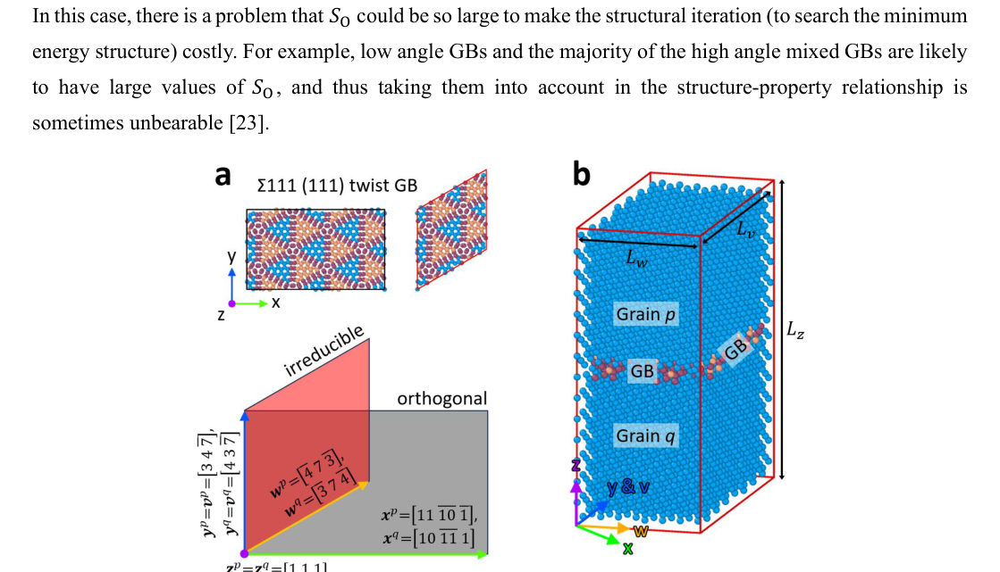

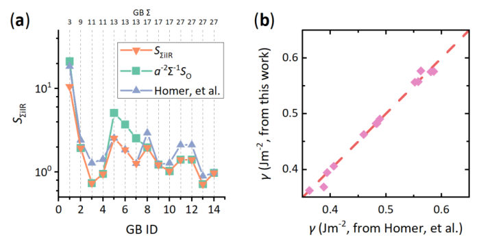
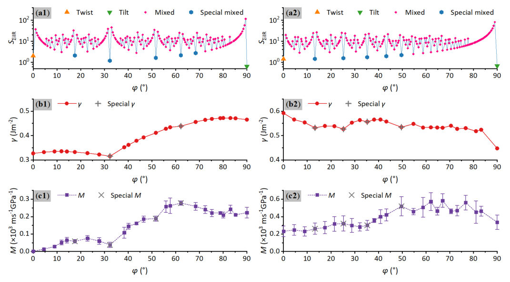
Authors: Xianfeng Chen, Nirmala Raj, Matthew R. Chua, Yi Fan Chen, Chenyue Gu, Minxing Xu, Young-Wook Cho, Syed M. Assad, Lu Ding, Ping Koy Lam
Type: experiment · Category: other · PDF: https://arxiv.org/pdf/2607.22160v1
Analysis basis: full PDF text, analyzed in chunks
Topic relevance: spintronics-quantum-optics interface 3/5 · quantum measurements 2/5 · driven-dissipative phase transition 1/5 · exotic spin models in light-matter 1/5
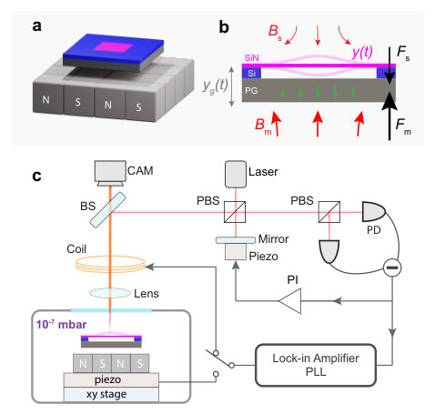
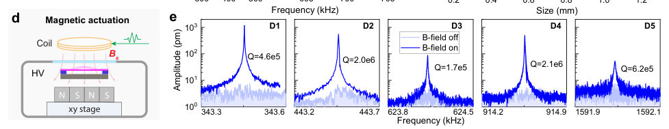
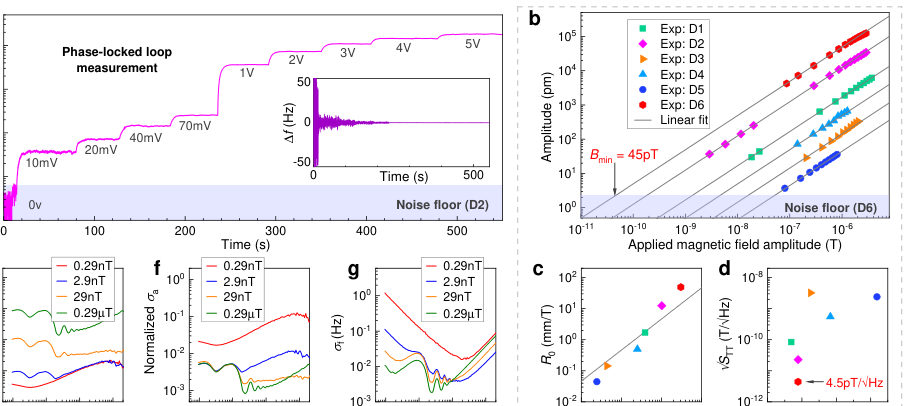
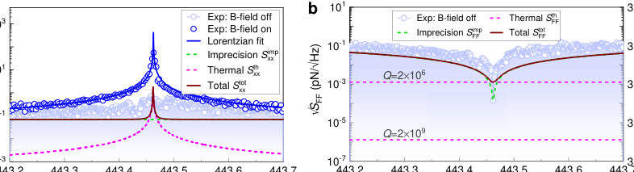
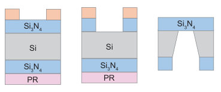
Summary. This paper presents a novel magnetometer utilizing a hybrid system where a diamagnetically levitated graphite plate converts weak magnetic fields into mechanical motion. This signal is then read out by an ultra-high quality factor nano-trampoline resonator, achieving sensitivities in the picotesla range at room temperature. The approach offers a solid-state pathway for highly sensitive AC magnetic field sensing.
Why it may be interesting. While not directly quantum information focused, this work involves high-precision measurement at the nanoscale, which often interfaces with quantum noise limits (like thermal noise) and requires advanced control techniques relevant to quantum optics/sensing.
Main problem. The primary goal is to develop a high-precision magnetometer by combining diamagnetic levitation with nanomechanical resonators, overcoming challenges related to functionalization without losing low dissipation.
Main result. The authors achieved a peak magnetic field sensitivity of $4.5 ext{ pT}/\sqrt{ ext{Hz}}$ at room temperature using the hybrid platform, establishing it as a new class of high-sensitivity magnetometers.
Method. The system uses a macroscopic diamagnetically levitated graphite plate to transduce weak oscillating magnetic fields into mechanical motion, which is then amplified and read out by a high-Q silicon nitride nano-trampoline resonator.
Model / system. The platform consists of a free-floating proof mass (graphite) coupled to a $ ext{SiN}$ membrane resonator. The coupling converts magnetic field variations into mechanical force, which is then measured via the resonator's resonance response.
Key observables. Peak magnetic field sensitivity ($ ext{pT}/\sqrt{ ext{Hz}}$), Resonance frequency ($f$), Quality factor ($Q$), and Displacement amplitude ($\delta x(t)$).
Important parameters / regimes. Room temperature operation, $Q=6 imes10^6$, $ ext{P} < 5 imes 10^{-7} ext{ mbar}$, and the theoretical limit of femtotesla-level sensing.
Assumptions / limitations. The system's sensitivity is limited by thermomechanical noise, and the magnetic signal force component ($F_s$) is assumed to be proportional to $\chi/\mu_0 B_s abla B_m$.
Figures summary. Figures illustrate the setup schematic (levitating graphite over magnets), dynamic characterization via piezoelectric actuation, and detailed analysis of frequency response curves comparing levitated vs. mounted states.
Paper structure. The paper details the physical coupling mechanism between magnetic fields and mechanical motion, presents experimental measurements using interferometry and PLL tracking to measure resonance parameters ($Q$, $f$), and concludes with a performance comparison against other sensing technologies.
Levitated systems and high-$Q$ membrane nanomechanical resonators have achieved exceptional sensitivity in precision sensing, but functionalizing such resonators for practical applications without degrading their low dissipation remains challenging. Here, we combine diamagnetic levitation with a high-$Q$ nanomechanical resonator to realize a high-precision magnetometer for sensing weak oscillating magnetic fields. A macroscopic diamagnetically levitated graphite plate acts as a free-floating proof mass that couples strongly to magnetic fields, converting them into mechanical motion that is resonantly amplified by a low-dissipation nano-trampoline resonator. Operating at room temperature and without magnetic shielding, we achieve a peak magnetic-field sensitivity of $4.5\, \mathrm{pT}/\sqrt{\mathrm{Hz}}$ using a resonator with a mechanical quality factor of $Q=6\times10^{6}$ at $443\, \mathrm{kHz}$. The system sensitivity is limited by thermomechanical noise. With further improvements in mechanical $Q$, this hybrid levitated platform offers a pathway toward femtotesla-level AC magnetic-field sensing, establishing diamagnetically levitated nanomechanical resonators as a new class of high-sensitivity magnetometers at room temperature.
Authors: Wei Wan
Type: theory · Category: numerical methods · PDF: https://arxiv.org/pdf/2607.22090v1
Analysis basis: full PDF text, analyzed in chunks
Topic relevance: methods for driven-dissipative 1/5



Summary. This work introduces an algorithm to calculate the irreducible macroscopic representation of grain boundaries in crystalline lattices. By determining a minimal supercell size parameter, it allows researchers to predict which complex GB structures are 'structurally special' before running expensive atomistic simulations. This significantly accelerates the study of structure-property relationships in polycrystalline materials.
Why it may be interesting. While focused on materials simulation, the core methodology—developing a rigorous mathematical framework (irreducible representation) to reduce dimensionality and complexity for high-throughput screening—is highly relevant to developing efficient computational models across physics.
Main problem. The primary challenge is efficiently modeling grain boundaries (GBs) because computational resources limit the accessible system size, restricting the characterization of all possible GB structures.
Main result. The authors propose an algorithm to determine the irreducible macroscopic representation and supercell size for any given CSL GB character, significantly reducing computational overhead compared to conventional methods.
Method. They developed a novel algorithm based on finding the irreducible macroscopic representation of the GB character, allowing the construction of minimal-sized monoclinic supercells. This is coupled with a weighted sampling strategy for high-throughput screening.
Model / system. The study focuses on Grain Boundaries (GBs) in cubic lattices, specifically analyzing Coincident-Site Lattice (CSL) characters. The model involves defining the GB structure via five macroscopic degrees of freedom and simulating its properties using atomistic methods like LAMMPS.
Key observables. Irreducible supercell size ($S_{\Sigma i}^{IR}$), Grain Boundary Energy ($\gamma$), and GB mobility ($M$).
Important parameters / regimes. The structural particularity is quantified by the irreducible supercell size, which serves as a pre-evaluation criterion for selecting 'special' GB characters.
Assumptions / limitations. The weighted sampling strategy assumes mutual independence of the five macroscopic parameters defining the character space; furthermore, GB mobility is noted to be less definitive for structural particularity than GB energy.
Figures summary. Figures compare the proposed irreducible supercell size ($S_{\Sigma i}^{IR}$) against existing methods, showing consistency in calculated GB energy ($\gamma$) regardless of the method used. Figure 3 correlates low $S_{\Sigma i}^{IR}$ with lower GB energy and specific trends in $\gamma-\varphi$ curves.
Paper structure. The paper introduces the core algorithm for finding the irreducible representation, compares its size parameter ($S_{IR}$) against orthogonal methods, validates this method using existing datasets (Homer), and finally applies the tool to predict structural particularity by correlating small $S_{\Sigma i}^{IR}$ with low GB energy in mixed GB simulations.
A major challenge in the modelling and simulation of grain boundaries (GBs) is the conflict between the system size and computation capability, which inherently restricts the computationally accessible boundary characters. We present an algorithm to find the irreducible macroscopic representation of any given coincident-site-lattice GB character in the cubic lattice, and thus determine the irreducible size of its supercell. The algorithm is compared with the conventional orthogonal supercell and a published calculation method to assess its merits in saving computational resources. This supercell size parameter can be used to predict which GB character is relatively special across the vast 5D space, as those GBs possess small structural units are likely to exhibit particular structure-property relationships that are worthy of attention. The prediction is confirmed by examining the energy and mobility trends of aluminum mixed GBs obtained from the atomistic simulations.
Authors: M. A. Hidalgo
Type: theory · Category: strongly correlated electrons · PDF: https://arxiv.org/pdf/2607.22058v1
Analysis basis: full PDF text, analyzed in chunks
Topic relevance: Kondo & dissipative impurity 1/5
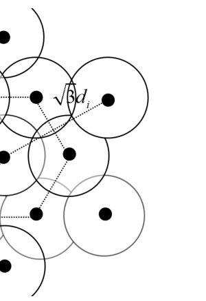
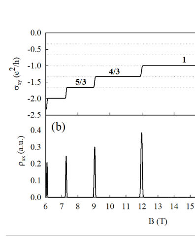
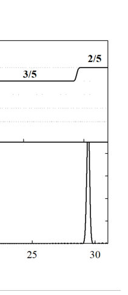
Summary. This paper proposes that impurity-induced geometric correlations within Landau levels can stabilize and organize the energy spectrum of Fractional Quantum Hall Effect states. By modeling the system as coupled displaced orbitals, it derives an effective correlation energy dependent on disorder geometry. This framework suggests that orbital coherence plays a key role in generating fractional spectral features without requiring full topological many-body theory.
Why it may be interesting. It offers a concrete, geometrically motivated mechanism to explain spectral features (like fractional plateaus) in FQH systems using disorder parameters, providing a complementary view to purely interaction-driven theories.
Main problem. To propose a complementary phenomenological framework for understanding fractional quantum Hall effect (FQHE) states by attributing their organization and stability partly to impurity-induced geometric correlations within a Landau level, rather than solely relying on strongly correlated many-body descriptions.
Main result. The model shows that impurity correlations can reorganize the effective Landau-level structure, reproducing odd-denominator fractional sequences through guiding-center quantization and orbital coherence. This suggests geometry provides an additional contribution to FQH stability.
Method. The analysis constructs an effective correlated orbital basis using displaced Landau orbitals and calculates energy splittings based on nearest-neighbor couplings induced by the impurity potential.
Model / system. The system is a 2DEG coupled to a correlated distribution of ionized impurities. The model uses a Hamiltonian approach, treating the interaction via coupling terms derived from overlapping displaced Landau orbitals.
Key observables. Effective fractional sublevel structure, shot-noise suppression factor (Fq ~ 1/q), and activated transport gaps ($\Delta E_{p/q}$).
Important parameters / regimes. Magnetic length ($\ell_B$), impurity spacing ($d_i$), and the separation between the electron gas and impurities ($\Delta$).
Assumptions / limitations. The model is explicitly phenomenological, does not derive topological order or anyonic statistics, and approximates interactions by retaining only nearest-neighbor couplings.
Figures summary. Figures illustrate the schematic representation of impurity-induced correlations between displaced Landau orbitals and show fractional sublevel organization for 1/3 and 1/5 hierarchies via magnetoconductivity plateaus.
Paper structure. The paper develops a geometric model by analyzing the coupling between displaced Landau orbitals, deriving an effective correlation energy ($\gamma$), and mapping this structure onto observable quantities like transport gaps and fractional plateau patterns.
The fractional quantum Hall effect (FQHE) is conventionally understood in terms of strongly correlated many-body states and emergent quasiparticles with fractional charge. Here, we propose a complementary phenomenological framework in which impurity-induced geometric correlations within a Landau level contribute to the organization and stability of fractional quantum Hall states. The model considers a two-dimensional electron gas coupled to a correlated distribution of ionized impurities located at a finite distance from the electronic layer. Impurity-induced overlap between displaced Landau orbitals generates coherent guiding-center correlations and an effective splitting of the Landau-level degeneracy into fractional sublevels. Within this framework, the resulting energy spectrum reproduces the principal odd-denominator fractional sequences through the interplay between guiding-center quantization and impurity-induced orbital coherence. An explicit expression for the correlation energy is obtained in terms of the magnetic length, impurity spacing, and impurity-layer separation, providing a direct connection between the proposed mechanism and experimentally controllable heterostructure parameters. The model naturally incorporates the integer quantum Hall regime as the limiting case of vanishing correlation-induced splitting. Within this geometric picture, effective fractional factors emerge from collective orbital coherence and correlation-modified guiding-center dynamics rather than being uniquely associated with independent fractionally charged quasiparticles. Although the model does not attempt to derive topological order, anyonic statistics, or many-body incompressibility, it suggests that impurity-induced geometry and guiding-center coherence may provide an additional contribution to the emergence, stability, and experimental visibility of fractional quantum Hall states.